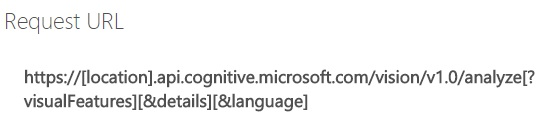
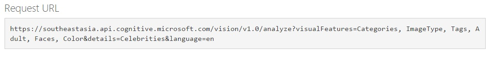
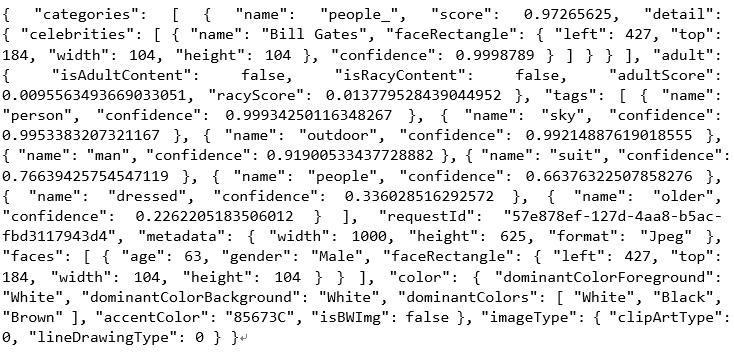
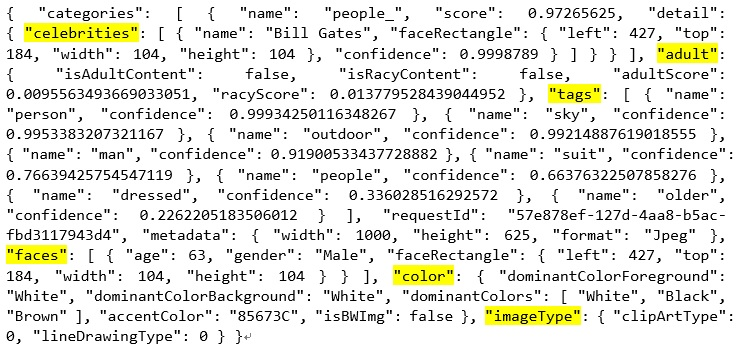
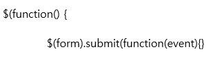
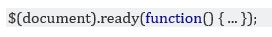
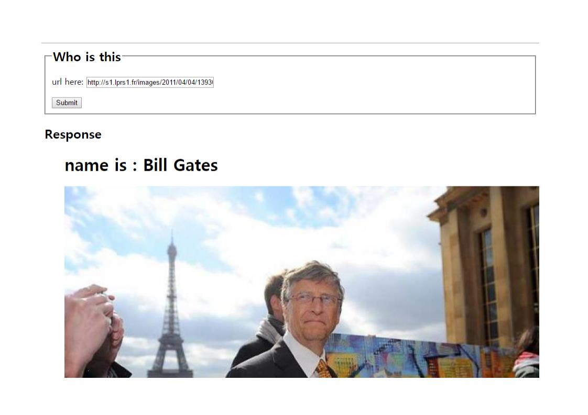

What is Analyaze Image API?
Now you came all the way to use Microsoft Computer Vision API. We will talk about how to use Analyze image API first. With Analyze image API, we can extract visual features based on image content provided by the user.
Below is an official documentation(reference) for Analyze image API.
Link to Analyze Image API official documentationThis webpage is made to introduce you more about how we can use the API in more specific way so I will present detailed features even to make you be able to use this API freely in the end.
Let’s see how it works first seeing how Request URL looks like. When you request to server, Request URL goes like this
you choose location among westus, eastus2, westcentralus, westeurope, and southeastasia. As request parameters there are visualFeatures, details, and language. VisualFeatures contain Categories, Tags, Description, Faces, ImageType, Color, and Adult. details contain Celebrities, and Landmarks language has two options like en; english, zn; simplified chinese.
Console Usage
There is a console you can use the API briefly so it is easier for you to get used to this API with the console. You can choose location, parameters, and even language on the console. Go ahead and test the console first!
Link is here
Link to Analyze Image API ConsoleI tested a image with the console. My request URL was like below
You can see I chose southeastasia for location, Categories, ImageType, Tags, Adult, Faces, Color for visualFeature, and Celebrities for details, and English for the language from the request URL.
I posted a URL of Bill Gates standing next to Eiffel tower to test the console.
http://s1.lprs1.fr/images/2011/04/04/1393033_gates-trocadero_1000x625.jpg{kind=link}

I got a result like this from the picture above. The result is in JSON.
You can find some parameters I put on the request like Celebrites, adult, etc. Other features like categories and metadata comes out as a result default. The Server could not detect the Eiffel tower because it quite looks blur but detected Bill gates exactly. The response is in the form of JSON. So you can extract information you want to extract easily as you already know how to deal with JSON.
Ok, now we are done with console. Let’s jump into API code written in JavaScript to make a useful app for us.
Getting the name of the celebrities
Above JavaScript part of the program starts with lines below.
I made a form to get a URL as an input. I need to DOM elements of the page are all loaded and ready to use that. So I put $(function(){}
$(function() is a short version of
and after I put $(form).submit(function(event){}. This means like “Do something inside the bracket when a form is submitted. I put my API key, and input URL, and payload(myBody here) to variables. Parameters are stored in an object called params. I put $.ajax({}) to do an asynchronous AJAX request. Remember you had to write long codes before when you used pure JavaScript. You can apply this form of AJAX to other APIs later when you use jQuery. Inside $.ajax({}), you can see processes to request data to url and before sending we set request header with .setRequestHeader() function. And when the request is successfully doen, .done() part works and the response is stored in data parameter while there is something wrong .fail() part works so it put “error” alert on the browser. You can deal with information deduced from the picture from response which is stored in a form of JSON.
Manipulating JSON I could make a simple application showing the name of the celebrities.
Try it now own your own. Try only picture with the celebrity is in. If not, the program will not work properly. It will only show you the picture from the URL you input. Now I will end the explanation about this analyze image API.